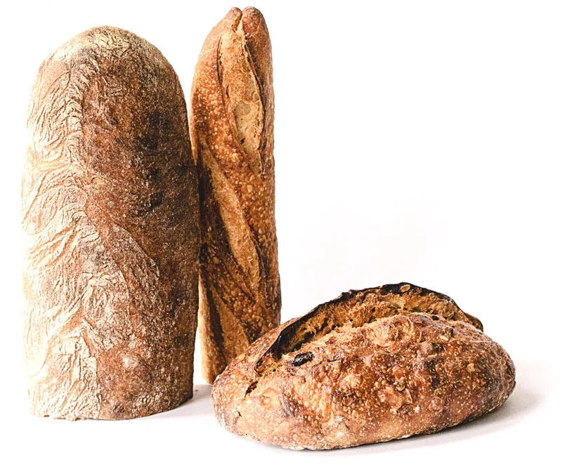
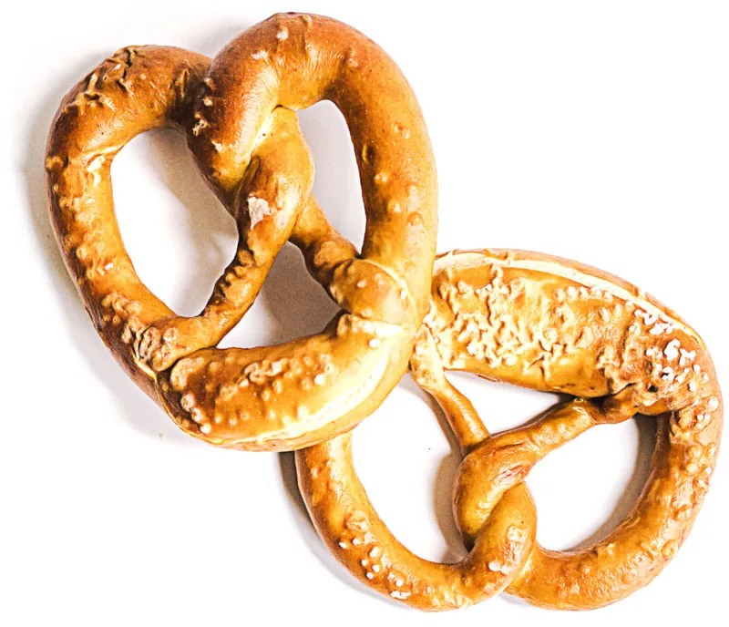

Baker Nilsen AS · Åsgårdstrand
Din lokale baker siden 1903.
Hver eneste virkedag leverer vi nybakte brød til en rekke butikker og utsalg i distriktet rundt oss. Vi er stolte over å være en lokal leverandør som fortsatt bidrar til gode frokoster, matpakker og sunne lunsjmåltider.
Ferske brødKaker etter bestillingTil kaffen
- 1903
- lokalt bakeri i over 100 år
- 2 utsalg
- Torggården og Aaser
- Hver virkedag
- ferske brød til butikkene
Noen av våre mange tilbud.
Bakt i Åsgårdstrand, solgt lokalt — og servert i kaféen midt i byen.

Ferske brød
Hver virkedag leverer vi nybakte brød til butikker og utsalg i distriktet.

Kaker etter bestilling
Enten anledningen er stor eller liten, kan vi bake en kake som passer for deg.

Bakverk og kaffe
Et rikt utvalg av delikate bakverk — i kaféen eller med hjem.
Her finner du kaféen.
På Baker Nilsen Café i Torggården midt i byen kan du sette deg ned med en kopp kaffe og et kakestykke, eller stikke innom for en hyggelig lunsj.
Vi serverer et stort utvalg ferdigsmurte måltid, kakestykker, kaffe og annen drikke. Når været tillater det, kan du sette deg ned på uteserveringen.
- Torggården
- Man–fre 08.30–18.00
Lørdag 08.30–16.00 - Aaser
- Man–fre 09.00–16.00
Lørdag 09.00–14.30 - Bestilling
- Kaker bestilles på post@baker-nilsen.no
Bestill kake
Den skal passe anledningen
Enten anledningen er stor eller liten kan vi bake en kake som passer for deg. Ta kontakt i god tid, så planlegger vi sammen.
Lokal i over hundre år
Baker Nilsen har bakt i Åsgårdstrand siden 1903. Det er lang tid — og en påminnelse om at det er kundene i distriktet som har gjort det mulig.
Vi leverer fortsatt brød hver virkedag, og baker kaker og bakverk til hverdag og fest.
Skal du bestille kake?
Send en henvendelse med anledning, antall og dato — så svarer vi med forslag.